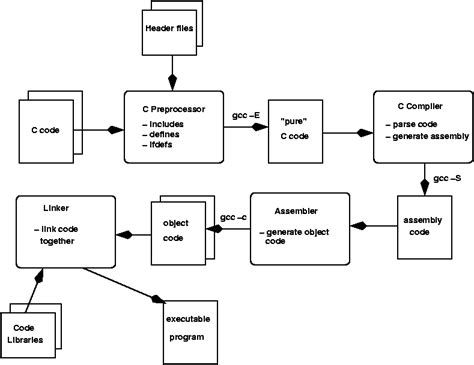
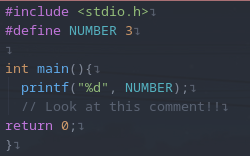
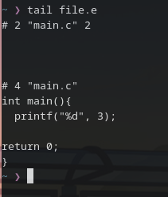
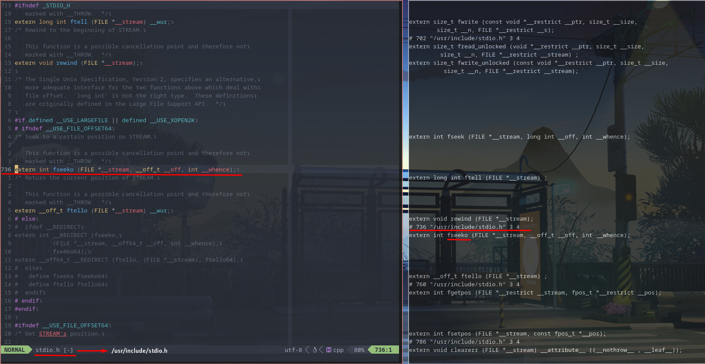
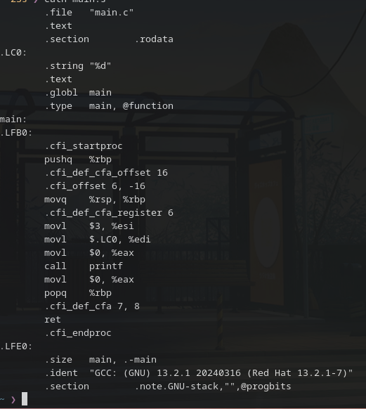
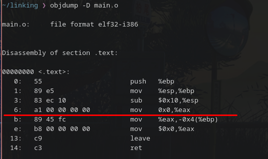
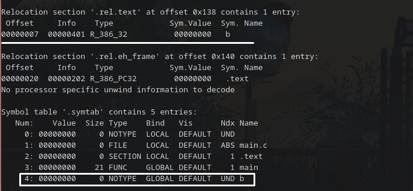
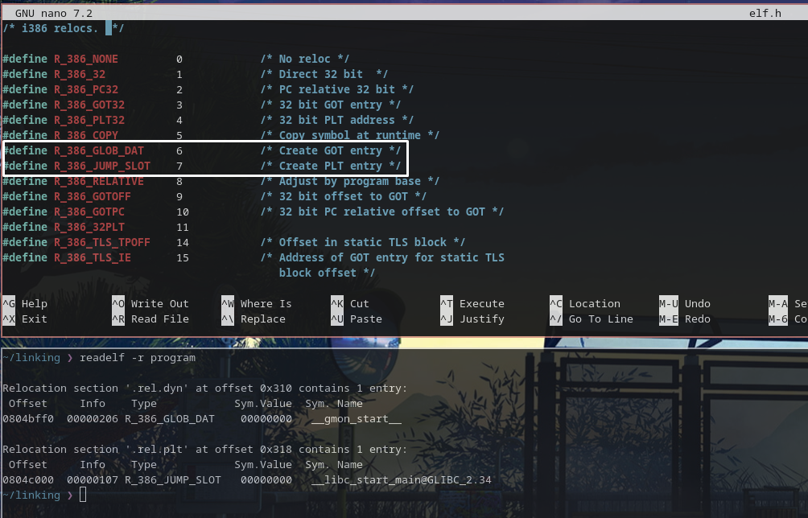
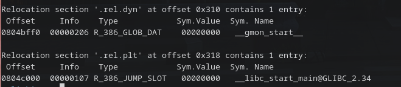

ELF Relocations
In this post we’re going to explore how linkers do relocations, why this are needed, how ELF helps with this process among very other things.
Generating Executables
In this post we are interested in linking, the last step between having a chunk of code and a executable. Before we deep into linkers, I’ll briefly explain how we go from source code to the final executable.

Preprocessing
The preprocessor handles the preprocessor directives, and expand them, for example, replacing the #include directives with the content of the respective file, expanding macros, and selecting differents portions of text depending of if,ifdef,ifndef, it also removes comments.
Let’s see it on action, I wrote a basic program for you to see how the preprocessor works. for this I used: gcc -E main which makes GCC stop just after the preprocessing step.

As you can see very basic code, with a comment, and a defined macro, let’s compile it and see the output:

As you can see our macro has been expanded, the comment removed. This is just the tail of the file, the full file is 746 lines long, as it has to literally include the include directive.
The preprocessor works on a stream of preprocessing tokens. Macro substitution is basically replacen tokens with other tokens. After all this work the preprocessor generates a output like the seen before, in which he make a stream of tokens resulting from the transformations described above. It also adds some special markers to tell the compiler where each line came from.

Compilation
Keep in mind that the compilation process is complex and extensive, and this is just a highly simplified overview.
Compilation is the second step in our code to executable process. The compiler transform our preprocessed code into assembly code through the following steps:
Lexical Analyis
In this phase the compiler splits the source(stream of characters) into fragments known as lexemes.
Example:
char *str = "hello";
In the above statement we have 6 lexemes:
1. char
2. *
3. str
4. =
5. "hello"
6. ;
When the code(character stream) has been split into lexemes, we now have a token stream.
A token it’s made up of two parts: the token's name, basically it’s a symbol that tells the syntax analyser the kind of lexical unit the lexeme is,such it’s a keyword, a variable name, etc, and the attribute value (optional) which points to an entry in the symbol table for this token, it’s needed when the token represents something that can vary or needs extra information for being processed correctly.
Token Lexemes
if if
else else
comparison <=, >=
id pi,variable
number 3.141519, 0
literal "test"
assignment =
Practical example:
value = data * 2
This characters would be group into this lexemes, and mapped into the following tokens:
1 - value: It would be mapped to the token (id,1) where token is the symbol, and 1 it's the attribute value that points to the symbol table entry.
2 - The = symbol: Would be mapped into the token (=). This token doesn't vary, and so there's no need for a attribute value.
3 - data: Maps into (id,2).
4 - the * symbol: Maps into (*).
5 - Number 2: Maps into (number,3).
And so we are left with:
(id,1) (=) (id,2) (*) (number,3)
Syntax Analysis
In this step of the compiling process the syntax analyser or parser takes the output from the lexical analyser and creates a tree representation that depicts the grammatical structure of the token stream. Each interior node represents an operation and the children node represents the arguments of the operation.
(id,1)(=)(id,2)(*)(number,3)
=
/ \
(id,1) *
/ \
(id,2) (number,3)
Semantic Analysis
Semantic analysis uses the syntax tree generated by the parser to verify the semantic consistency of the source program with the language definition. It also performs type checking to ensure that each operator has matching operands.
Intermediate Code Generation
In the compiling process, the compiler may produce one or more intermediate representations. For example, the syntax tree we saw before, compilers may create a low level intermediate representation which should be easy to produce and easy to translate to machine langague, there are lots of intermediate forms but the most common are: Three address code, Postfix Notation and Syntax Trees.
Code Generation
We jumped over the Code Optimization process, but you can guess what it does: improve the intermediate code. This step is hard to understand and more to implement, and so we’ll not be talking about it.
The generator takes the intermediate representation as input and maps it into the target language. If the target language is machine code, the registers or memory locations are selected for each of the variables used by the program, the intermediate instructions are translated into sequences of machine instructions that perform the same task
Symbol Table Management
The compiler records the variables names and collect information about the attributes of each name, and “save” it into a Symbol Table.
The attributes may provide information about the storage allocated for a name, type, scope, and in the case of procedure names, the number and types of the arguments, the method of passing each argument, type returned, etc.
At the end of the compilation process we should have something like:

Assembler
In the assembler we’ll transform the “bare” assembly to an object file. It does this by generating instructions evaluationg the symbols and literals to produce machine code.
Assemblers have to flavours:
-
Single-Pass Assembler: When assemblers does all the work with just one scan it’s called single-pass
-
Two-Pass Assembler: Based on the name you guess what this does lol.
How does Two Pass Assembler Work?
In the first pass, it reads the entire source, looking for label definitions. All labes are collected, assigned values and stored into the symbol table in this pass, also, in this first pass, the assembler has find the size of the instruction, this will really depend on architecture, but now a days it’s common that the size is specified by the opcode and operands, because of this, the assembler has to work hard in this first pass just to determine the size of the instructions.
All the information gathered in the first pass is saved into a intermediate file . Each record of the intermediate file contains a copy of a source line plus all the information that has been collected about that line. At the end of the first pass the source is closed and now the assembler will work with this intermediate file.
Typical record in a intermediate file
Record type: Instruction, directive, comment, invalid line.
LC value for the line: Contains the memory address in which the next instruction will be stored.
Pointer to a entry in the OpCode Table. The second pass will use this to locate the information.
Copy of the source line: This is needed for the final listing.
In the second pass the intermediate file will be read, and now the assembler will assemble the instructions and write the object instruction into the object file.
TERMINAR ESTO
HABLAR SOBRE LOS ASSEMBLERS DE UNA PASADA
https://www.lurklurk.org/linkers/linkers.html#objfile -> Coger lo del object file
Linking Process
Finally we get here, the linking process, the last step to convert our source into a executable.
The work of the linker is simple, bind abstract names to concrete names , with this I mean, a programmer can write the name printf, and the linker will bind it to “the location X from the beggining of the executable code in stdio”.
The linker recieves input files, each of this files contains segments which is just chunks of code or data to be placed in the output file, each file also has at least one symbol table.
When the linker runs, it scans the input files to find the sizes of the segments and to collect the definitions and references of all the symbols. It creates a segment table as well as a symbol table.
Using this data, the linker determine which direction the symbol will be assign, adjust the memory addresses in the code and data segments and write the relocated code to the output file, it’s normal that this output file contains a symbol table for relinking or debugging.
When the assembler generates the object file, it generates the code using unrelocated addresses of code and data, it usually use zeros. The linker modifies the object code to reflect the actual addresses assigned.
This is the look of a imported symbol from a file before static linking process:

As you can see it is moving zeroes, as it doesn’t know the address.

But after linking we resolve it:
Static VS Dynamic
We’ll start with the static, as I think it’s the easier to understand.
Static linking consists of the linker copying all the dependencies into a final executable, this means that our new executable will have our code and the code of the libraries it invokes, as simple as that, this makes our executable heavier but it let us run a standalone binary.
In dynamic linking we copy the names of the external libraries into our executable as unresolved symbols.
How does ELF enter into play here?
The ELF sections hold the bulk information of the object file for the linking process: instructions, data, relocation, etc.
As you may know there are lot’s of section types, but we’re diving deep into the types of the common sections in a ELF SHT_RELA and SHT_REL.
SHT_RELA: This section holds relocation entries with a explicit addend, this is the structure that every entry has:
typedef struct {
Elf32_Addr r_offset; // Gives the location of where to apply the relocation
Elf32_Word r_info; // Combines the type of relocation with the symbol that is associated
Elf32_Sword r_addend; // Constant Value used for address calculation, or for the final value used in r_offset.
} Elf32_Rela;
SHT_REL: The same as SHT_RELA but without the addend:
typedef struct {
Elf32_Addr r_offset;
Elf32_Word r_info;
} Elf32_Rela;
We can see that r_info used for determining the type of relocation.

The sections name for the relocations have the name: The most common .rel sections are: .rel.dyn which is a relocation entry for dynamic symbols, and .rel.plt which is a relocation entry for PLT meta-datarelname:
